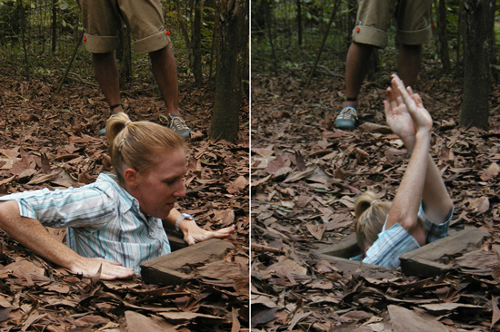
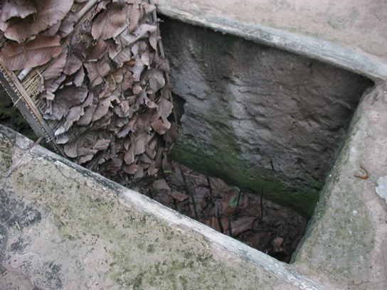
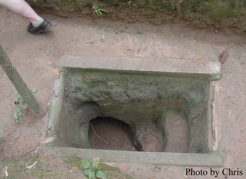

Viet Nam Trav-E-Logs©
| Cu Chi Tunnels
sent 27 May 2003 |
 |
| back: Me Kong Delta | Cu Chi Hiding Chamber |
================================= I trust many of you enjoyed the Sprung Floor Dance Festival in Santa Barbara this past weekend. I’m jealous. Well, maybe just a little. =================================
May 16, 2003
 The Viet Cong built an extensive tunnel network 60 KM north of Sai Gon in the jungle and villages of the Cu Chi District as part of an information and supply system. These tunnels, built without plans, went as deep as three levels, had living quarters, kitchens, and even meeting rooms. Shafts were constructed to handle air as well as kitchen exhaust, after clever odor and smoke diffusing. They were even designed to handle flooding by water. The passageway was sized for the much smaller Vietnamese body, with occasional choking locations and traps to keep intruders out.
As luck would have it for the Viet Cong, an American military complex was built above part of this existing network. This gave the Viet Cong access to the inside of the complex, which they effectively used at night to demoralize the troops.
Both a half-day and a full-day tour can be booked in Sai Gon, but the Full day tour spends much of the day driving to and from a religious cult, leaving little time to review the tunnels. I take the “half day” tour, which includes an opportunity to crawl through 3 sections of an “enlarged” tunnel (to accommodate the typical tourist), as well as a small section of an “original size” tunnel. As members of our tour group looked at each other to decide if they would give it a try, I just hopped down and did it. This had the advantage of running through at my own quick pace. The disadvantage was that if a cobra had taken up residence overnight, I would be the first to discover it. Fortunately, the only wildlife I came across was the common Asian millipede – dozens of them.
 No Americans are in our tour group – When Chris and I made reservations last night, the agent wrote “2 Germans” on the receipt. This is probably a good thing, because the guide held no bars while giving the tour. He talked about the small VC escaping through the tunnels, while the Fat American would get stuck in the choking sections. Early on, I thought the guide asked if I was South American. As we sat around for a drink at the conclusion of the tour, I discover what he actually said was “(you) sound American”.
Talking about wildlife, I’ve seen very few birds in the wild, even in the Me Kong Delta. Eurasian sparrow, and a few pigeons. No crows, sea gulls, blackbirds, kingfishers. Hopefully this will change as I travel northward.
Time to leave the Big City. Taking the morning bus for Da Lat, in the Highlands of Viet Nam. Should be much cooler.
Bill
------------------------------
Email me at the juno.com address "dancer2SEAsia"
"Travel is Fatal to Bigotry, Prejudice, and Narrow-minded ness" .... attributed to Mark Twain
| next: Da Lat |
| back: Me Kong Delta |